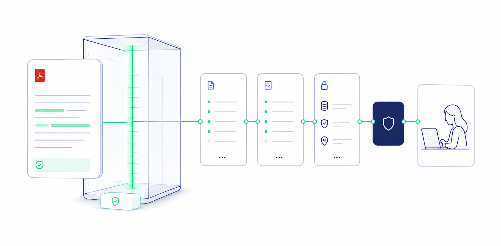
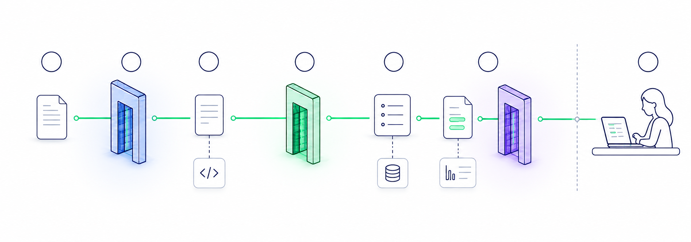

Architecture technique · M1.4 · policy v1.5
De l’octet reçu à la
revue humaine.
Une assistance multilayer qui part des dangers, combine des familles de preuve indépendantes et sait s’abstenir. Elle signale des faits compatibles avec une modification — jamais une fraude confirmée à elle seule.

01 · Menaces actuelles et couverture réelle
La carte des fraudes documentaires.
Une taxonomie vivante des manipulations connues. Chaque fiche distingue la trace recherchée, le contrôle réellement actif, l’angle mort et la prochaine couche à construire.
Règle de lecture« Contrôle actif » ne signifie jamais « document authentique ».
Comprendre les statuts ↓
Le moteur observe des faits reproductibles, expose sa couverture et s’abstient lorsque la preuve manque. La fraude et la décision crédit restent humaines.
Aucun scénario ne correspond à ces filtres.
Légende de décision
Une couverture graduée, jamais binaire.
- Actif cibléLa trace précise est contrôlée localement sur données synthétiques.
- PartielUne partie des variantes est visible ; un contournement reste possible.
- À ajouterAucun contrôle fiable n’est encore branché sur cette fraude.
- Source externeLe fichier seul ne peut pas répondre ; identité, émetteur ou portail sont requis.
Références de cadrage
La taxonomie est versionnée et reliée à des sources.
Les statuts de couverture viennent de l’audit du code M1.4. Les sources externes cadrent les menaces et rappellent les limites de la provenance, des signatures et de la détection automatisée.
02 · Flux exécuté aujourd’hui
Le pipeline réel, étape par étape
Cliquez sur une étape pour comprendre son rôle, sa sortie et son comportement prudent.

03 · Catalogue technique
Les briques, dans l’ordre du flux
Chaque outil a une fonction bornée, une limite visible et un statut : livré, préparé, cible ou expérimental.
04 · Architecture multilayer
Dix couches. Aucune preuve unique.
On part de chaque mode de falsification, puis on combine les représentations capables d’en observer des traces et un contrôle compensatoire.
L0 → L9 · regroupées en six plans opérationnels
Chaque couche répond à un angle mort différent.
Entrée & custody
Quotas, magic bytes, original byte-for-byte, SHA-256 et lineage des dérivés.
Livré local · infra cibleSource & provenance
C2PA local actif ; connecteur officiel, navigateur géré et attestation émetteur restent cibles.
M1.4 partiel · preuve positive cibleSignature & PDF natif
Intégrité CMS, révisions, objets, texte, polices et ordre de peinture.
Couverture partielle activePixels, OCR & sémantique
Localisation CV, texte visible, champs typés et recalcul déterministe.
Scaffold SHADOW · cibleRéférences & séries
Profils d’émetteurs, versions, règles, quasi-doublons et cohérence dossier.
Cible · données gouvernéesCapture, fusion & humain
Navigation guidée, policy déterministe, abstention et décision analyste.
Pilote local + policy livréeTrajectoire recommandée
Ajouter les familles manquantes sans remplacer la preuve par un score opaqueP0
Déployable en sécurité
GATEIAM · quarantaine · sandbox · queue durable · PostgreSQL · stockage objet · purge
P1
Contrôles déterministes complémentaires
SOUS GATESqpdf · ExifTool · veraPDF · DSS/eIDAS · OCR local · règles métier
P2
Preuves positives et références
CIBLEDurcissement C2PA · profils d’émetteurs · connecteurs institutionnels · navigation gérée
P3
Modèle visuel propriétaire calibré
V2Copy-move, collage, inpainting et retouche IA ; toujours corroboré par une autre famille
05 · Provenance et navigation guidée
Une échelle de preuve,
pas une promesse binaire.
La vidéo améliore la continuité observée, mais seule une source authentifiée ou une attestation signée apporte une preuve forte d’origine.
Principe non négociable
L’agent IA peut guider, orchestrer et expliquer. Il ne fabrique aucun résultat manquant, n’interprète jamais une page comme une instruction et ne modifie pas la policy.
06 · Lecture responsable
Ce que le système dit.
Et ce qu’il ne dit pas.
- Conserver et revérifier les octets reçus
- Localiser certains overlays, ruptures de police et ajouts post-raster
- Contrôler l’intégrité locale d’une signature numérique
- Valider un C2PA présent et distinguer une métadonnée IA déclarative
- Repérer un doublon binaire exact
- Afficher couverture, limites et abstention
- Détecter fiablement une retouche GPT aplatie sans provenance
- Détecter copy-move, collage ou inpainting par les pixels
- Vérifier salaire, IBAN, employeur ou cohérence métier
- Authentifier une source ou un émetteur sans connecteur
- Transformer l’absence de C2PA ou d’anomalie en preuve d’authenticité